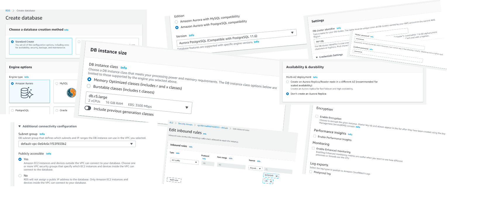
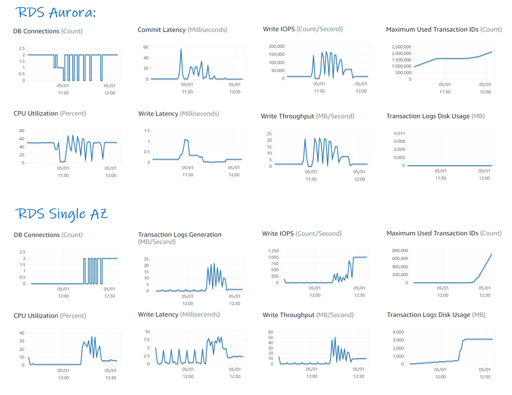

This was first published on https://www.dbi-services.com/blog/aws-aurora-xactsync-batch-commit/ (2020-05-01)
Republishing here for new followers. The content is related to the versions available at the publication date.
.
In AWS RDS you can run two flavors of the PostgreSQL managed service: the real PostgreSQL engine, compiled from the community sources, and running on EBS storage mounted by the database EC2 instance, and the Aurora which is proprietary and AWS Cloud only, where the upper layer has been taken from the community PostgreSQL. The storage layer in Aurora is completely different.
In PostgreSQL, as in most RDBMS except for exclusive fast load operations, the user session backend process writes to shared memory buffers. The write to disk, by the session process or a background writer process, is asynchronous. Because the buffer writes are usually random, they would add latency that would slow the response time if synced immediately. By doing them asynchronously, the user doesn’t wait on them. And doing them at regular intervals (checkpoints), they can be re-ordered to reduce the seek time and avoid writing the same buffer multiple times. As you don’t want to lose your committed changes or see the uncommitted ones in case of instance failure, the memory buffer changes are protected by the WAL (Write-Ahead Logging). Even when the session process is performing the write, there’s no need to sync that to the storage until the end of the transaction. The only place where the end-user must wait for a physical write sync is at commit because we must ensure that the WAL went to durable storage before acknowledging the commit. But those writes being sequential, this log-at-commit should be fast. A well-designed application should not have more than one commit per user interaction and then a few milliseconds is not perceptible. That’s the idea: write to memory only, without high latency system calls (visible through wait events), and it is only at commit that we can wait for the latency of a physical write, usually on local storage because the goal is to protect from memory loss only, and fast disks because the capacity is under control (only the WAL between two checkpoints is required).
Aurora is completely different. For High Availability reasons, the storage is not local but distributed to multiple data centers (3 Availability Zones in the database cluster region). And in order to stay in HA even in case of a full AZ failure, the blocks are mirrored in each AZ. This means that each buffer write is actually written to 6 copies on remote storage. That would make the backend, and the writer, too busy to complete the checkpoints. And for this reason, AWS decided to offload this work to the Aurora storage instances. The database instances ships only the WAL (redo log). They apply it locally to maintain their shared buffer, but that stays in memory. All checkpoint and recovery is done by the storage instances (which contains some PostgreSQL code for that). In addition to High Availability, Aurora can expose the storage to some read replicas for performance reasons (scale out the reads). And in order to reduce the time to recover, an instance can be immediately opened even when there’s still some redo to apply to recover to the point of failure. As the Aurora storage tier is autonomous for this, the redo is applied on the flow when a block is read.
For my Oracle readers, here is how I summarized this once:
I need to write more precisely about it but if I had to describe @awscloud Aurora storage architecture to an @OracleDatabase DBA, in a Friday tweet, I would say:
You read as if your storage is another RAC node, you write as your storage is a Data Guard standby.
— Franck Pachot (@FranckPachot) February 21, 2020
A consequence of this Aurora design is the session backend process sending directly the changes (WAL) and wait for sync acknowledge on COMMIT. This obviously adds more latency because all goes on the network, a trade-off between performance and availability. In this blog I’m showing an example of row-by-row insert running in RDS PostgreSQL and in Aurora PostgreSQL. And new design for writes means new wait event: the XactSync is not a PostgreSQL wait event but an Aurora-only one when synching at commit.
It is usually a bad idea to design an application with too frequent commits. When we have lot of rows to change, better do it in one transaction, or several transactions with intermediate commits, rather than commit each row. The recommendation is even more important in Aurora (and that’s the main goal of this post). I’ll run my example with different size of intermediate commit.
I have created an Aurora PostgreSQL 11.6 database running on db.r5large in my lab account. From the default configuration here are the settings I changed: I made it publicly accessible (that’s a temporary lab), I disabled automatic backups, encryption, performance insights, enhanced monitoring, and deletion protection as I don’t need them here. A few screenshots from that: 
I have created a ‘demo’ database and set an easy master password.
I’ll create a demo table and a my_insert procedure where the first parameter is the number of rows to insert and the second parameter is the commit count (I commit only after this number of rows is inserted):
cat > /tmp/cre.sql<<'SQL'
drop table if exists demo;
create table demo (id int primary key,n int);
create or replace procedure my_insert(rows_per_call int,rows_per_xact int) as $$
declare
row_counter int :=0;
begin for i in 1..rows_per_call loop
insert into demo values (i,i);
row_counter:=row_counter+1;
if row_counter>=rows_per_xact then commit; row_counter:=0; end if;
end loop; commit; end;
$$ language plpgsql;
\timing on
truncate table demo;
\x
select * from pg_stat_database where datname='demo';
select * from pg_stat_database where datname='demo' \gset
call my_insert(1e6::int,1000);
select *,tup_inserted-:tup_inserted"+ tup_inserted",xact_commit-:xact_commit"+ xact_commit" from pg_stat_database where datname='demo';
select * from pg_stat_database where datname='demo';
select * from pg_stat_wal_receiver;
select * from pg_stat_bgwriter;
create extension pg_stat_statements;
select version();
SQL
I saved that into /tmp/cre.sql and run it:
db=aur-pg.cluster-crtkf6muowez.us-east-1.rds.amazonaws.com
PGPASSWORD=FranckPachot psql -p 5432 -h $db -U postgres demo -e < /tmp/cre.sql
Here is the result:
select * from pg_stat_database where datname='demo';
-[ RECORD 1 ]--+------------------------------
datid | 16400
datname | demo
numbackends | 1
xact_commit | 4
xact_rollback | 0
blks_read | 184
blks_hit | 1295
tup_returned | 773
tup_fetched | 697
tup_inserted | 23
tup_updated | 0
tup_deleted | 0
conflicts | 0
temp_files | 0
temp_bytes | 0
deadlocks | 0
blk_read_time | 270.854
blk_write_time | 0
stats_reset | 2020-04-26 15:03:30.796362+00
Time: 176.913 ms
select * from pg_stat_database where datname='demo'
Time: 110.739 ms
call my_insert(1e6::int,1000);
CALL
Time: 17780.118 ms (00:17.780)
select *,tup_inserted-23"+ tup_inserted",xact_commit-4"+ xact_commit" from pg_stat_database where datname='demo';
-[ RECORD 1 ]--+------------------------------
datid | 16400
datname | demo
numbackends | 1
xact_commit | 1017
xact_rollback | 0
blks_read | 7394
blks_hit | 2173956
tup_returned | 5123
tup_fetched | 839
tup_inserted | 1000023
tup_updated | 2
tup_deleted | 0
conflicts | 0
temp_files | 0
temp_bytes | 0
deadlocks | 0
blk_read_time | 317.762
blk_write_time | 0
stats_reset | 2020-04-26 15:03:30.796362+00
+ tup_inserted | 1000000
+ xact_commit | 1013
That validates the statistics I gather: one million insert with a commit every 1000. And the important point: 17.7 seconds to insert those 1000000 rows on Aurora.
Ok, 17 seconds is not enough for me. In the following tests I’ll insert 10 million rows. And let’s start doing that in one big transaction:
cat > /tmp/run.sql <<'SQL'
truncate table demo;
vacuum demo;
\x
select * from pg_stat_database where datname='demo' \gset
\timing on
call my_insert(1e7::int,10000000);
\timing off
select tup_inserted-:tup_inserted"+ tup_inserted",xact_commit-:xact_commit"+ xact_commit" from pg_stat_database where datname='demo';
SQL
I run this on my Aurora instance.
[opc@b aws]$ PGPASSWORD=FranckPachot psql -p 5432 -h $db -U postgres demo -e < /tmp/run.sql
truncate table demo;
TRUNCATE TABLE
vacuum demo;
VACUUM
Expanded display is on.
select * from pg_stat_database where datname='demo'
Timing is on.
call my_insert(1e7::int,10000000);
CALL
Time: 133366.305 ms (02:13.366)
Timing is off.
select tup_inserted-35098070"+ tup_inserted",xact_commit-28249"+ xact_commit" from pg_stat_database where datname='demo';
-[ RECORD 1 ]--+---------
+ tup_inserted | 10000000
+ xact_commit | 62
This runs the call with 10 million rows with commit every 10 million, which means all in one transaction. The database stats show very few commits (there may be some irrelevant background jobs at the same time). Elapsed time for the inserts: 2:13 minutes.
I did not enable Performance Insight so I’ll run a dirty active sessions sampling:
while true ; do echo "select pg_sleep(0.1);select state,to_char(clock_timestamp(),'hh24:mi:ss'),coalesce(wait_event_type,'-null-'),wait_event,query from pg_stat_activity where application_name='psql' and pid != pg_backend_pid();" ; done | PGPASSWORD=FranckPachot psql -p 5432 -h $db -U postgres demo | awk -F "|" '/^ *active/{print > "/tmp/ash.txt";$2="";c[$0]=c[$0]+1}END{for (i in c){printf "%8d %s\n", c[i],i}}' | sort -n & PGPASSWORD=FranckPachot psql -p 5432 -h $db -U postgres demo -e < /tmp/run.sql ; pkill psql
This runs in the background a query on PG_STAT_ACTIVITY piped to an AWK script to get the number of samples per wait even. No wait event means not waiting (probably ON CPU) and I label it as ‘-null-‘.
Here is the result for the same run. 2:15 which proves that there’s no overhead with my sampling running in another session with plenty of CPU available:
Expanded display is on.
select * from pg_stat_database where datname='demo'
Timing is on.
call my_insert(1e7::int,10000000);
CALL
Time: 135397.016 ms (02:15.397)
Timing is off.
select tup_inserted-45098070"+ tup_inserted",xact_commit-28338"+ xact_commit" from pg_stat_database where datname='demo';
-[ RECORD 1 ]--+----
+ tup_inserted | 0
+ xact_commit | 819
[opc@b aws]$
1 active IO XactSync call my_insert(1e7::int,10000000);
30 active IO WALWrite call my_insert(1e7::int,10000000);
352 active -null- call my_insert(1e7::int,10000000);
[opc@b aws]$
Most of the time (92% of pg_stat_activity samples) my session is not on a wait event, which means running in CPU. 8% of the samples are “WALWrite” and only one sample “XactSync”.
This “XactSync” is something that you cannot find in PostgreSQL documentation but in Aurora documentation:
IO:XactSync – In this wait event, a session is issuing a COMMIT or ROLLBACK, requiring the current transaction’s changes to be persisted. Aurora is waiting for Aurora storage to acknowledge persistence.
The WALWrite is the session process sending the WAL but not waiting for acknowledge (this is my guess from the small wait samples as I’ve not seen this internal Aurora behaviour documented).
I’ll now run with different commit size, starting from the maximum (all in one transaction) down to commit every 100 rows. I’m copying only the interesting parts: the elapsed time and the wait event sample count:
call my_insert(1e7::int,1e7::int);
CALL
Time: 135868.757 ms (02:15.869)
1 active -null- vacuum demo;
44 active IO WALWrite call my_insert(1e7::int,1e7::int);
346 active -null- call my_insert(1e7::int,1e7::int);
call my_insert(1e7::int,1e6::int);
CALL
Time: 136080.102 ms (02:16.080)
3 active IO XactSync call my_insert(1e7::int,1e6::int);
38 active IO WALWrite call my_insert(1e7::int,1e6::int);
349 active -null- call my_insert(1e7::int,1e6::int);
call my_insert(1e7::int,1e5::int);
CALL
Time: 133373.694 ms (02:13.374)
30 active IO XactSync call my_insert(1e7::int,1e5::int);
35 active IO WALWrite call my_insert(1e7::int,1e5::int);
315 active -null- call my_insert(1e7::int,1e5::int);
call my_insert(1e7::int,1e4::int);
CALL
Time: 141820.013 ms (02:21.820)
32 active IO WALWrite call my_insert(1e7::int,1e4::int);
91 active IO XactSync call my_insert(1e7::int,1e4::int);
283 active -null- call my_insert(1e7::int,1e4::int);
call my_insert(1e7::int,1e3::int);
CALL
Time: 177596.155 ms (02:57.596)
1 active -null- select tup_inserted-95098070"+ tup_inserted",xact_commit-33758"+ xact_commit" from pg_stat_database where datname='demo';
32 active IO WALWrite call my_insert(1e7::int,1e3::int);
250 active IO XactSync call my_insert(1e7::int,1e3::int);
252 active -null- call my_insert(1e7::int,1e3::int);
call my_insert(1e7::int,1e2::int);
CALL
Time: 373504.413 ms (06:13.504)
24 active IO WALWrite call my_insert(1e7::int,1e2::int);
249 active -null- call my_insert(1e7::int,1e2::int);
776 active IO XactSync call my_insert(1e7::int,1e2::int);
Even if the frequency of XactSync is increasing with the number of commits, the elapsed is nearly the same when the commit size is higher than ten thousand rows. Then it quickly increases and committing every 100 rows only brings the elapsed time to 6 minutes with 74% of the time waiting on XactSync.
This wait event being specific to the way Aurora foreground process sends the redo to the storage, through the network, I’ll run the same with a normal PostgreSQL (RDS) running on mounted block storage (EBS).
I’m adding here some CloudWatch metrics during those runs, starting at 11:30 with large commit size down to row-by-row commit still running at 12:00 
As you can see I’ve added the ones for the next test with RDS PostgreSQL running the same between 12:15 and 12:30 which is detailed in the next post: https://www.dbi-services.com/blog/aws-aurora-vs-rds-postgresql/. Interpreting those results is beyond the scope of this blog post. We have seen that in the frequent commit run most of the time is on IO:XactSync wait event. However, CloudWatch shows 50% CPU utilization which means, for r5.large, one thread always in CPU. This is not exactly what I expect with a wait event. But, quoting Kevin Closson, everything is a CPU problem, isn’t it?
{kind=link}
{kind=link}